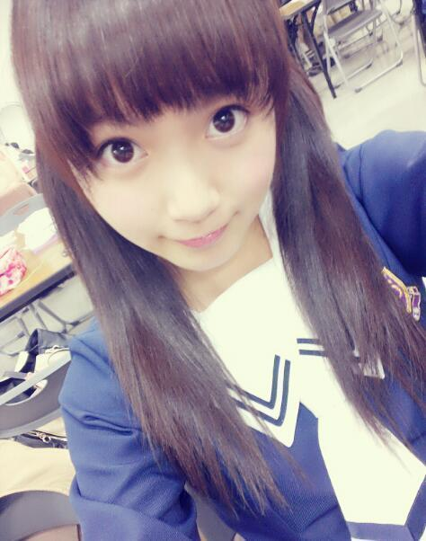
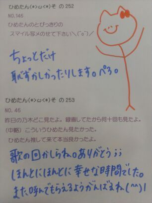

| 2013/03 25 Mon | ひめたん(*>ω<*)そ の275 |

今日は乃木ここ撮りましたー
みなさんおまたせしましたー
最近握手会で
「次の乃木ここも楽しみにしてるよ(^^)」
って方がいっぱいいらっしゃったので
取り急ぎ報告させていただきまっす☆
前々回...ですかね
全握後のブログのコメント
全部反映されたみたいだから読んでたら
はじめましてって方がいぱーいで
とってもとっても嬉しかったですん(・ω・)！
ありがとうっこれからもよろしくですー
そして今までのひめきゅんさんも
変わらずよろしくねー
はつらつ、うんちく、ね
読めた人 結構おったね！
みんなえらいねー
えらいぞーいいこいいこー...
あ、いや真面目にゆってます。
別に棒読みなんかじゃ、ないんだからねっ。
中３組の正式名称は
ちょっとー公開しない方向で
話がついてるので
気にしないでね(｀・ω・´)♪
気軽に中３組って呼んでくれたら
ふたりとも喜ぶと思ーよっ
そしてるんるんブログ見たぞ、
今度は３人でディズニー行こー！
今日は乃木ここ撮りましたー
みなさんおまたせしましたー
最近握手会で
「次の乃木ここも楽しみにしてるよ(^^)」
って方がいっぱいいらっしゃったので
取り急ぎ報告させていただきまっす☆
前々回...ですかね
全握後のブログのコメント
全部反映されたみたいだから読んでたら
はじめましてって方がいぱーいで
とってもとっても嬉しかったですん(・ω・)！
ありがとうっこれからもよろしくですー
そして今までのひめきゅんさんも
変わらずよろしくねー
はつらつ、うんちく、ね
読めた人 結構おったね！
みんなえらいねー
えらいぞーいいこいいこー...
あ、いや真面目にゆってます。
別に棒読みなんかじゃ、ないんだからねっ。
中３組の正式名称は
ちょっとー公開しない方向で
話がついてるので
気にしないでね(｀・ω・´)♪
気軽に中３組って呼んでくれたら
ふたりとも喜ぶと思ーよっ
そしてるんるんブログ見たぞ、
今度は３人でディズニー行こー！

 ひめたんは乃木坂メンバーに
ひめたんは乃木坂メンバーに
感謝の言葉を伝えるとしたら、何て言うの？
↓→→↑↓
ありがとうー
矢印はイントネーションねー
どうやらね、なまってるみたいです、笑
だーいぶ標準語になりつつあるひめたんも
ありがとうーは広島弁なんだと。
5th個人PVの "ありがとうー" は広島弁らしい...
メールやコメントもらった時に いつも
この言葉が入ってたら
うれしいって言葉ある？(^^;)ゞ
あったかい言葉ならなんでも嬉しいけどねー
"応援してるよ"も"ひめたんみたいになりたい！"も
"もうちょい英語勉強しようか、笑"も
なーんでも嬉しいです♪
ひめたんの最近の
お気に入りアイテムを教えてください！
今のマイブームはなんですか？
マイブームとゆーか
美白パックをねー毎日やってるよー(〃ω〃)
ひめたんの目ぢからが凄いのに
気づいたのはいつぐらい？
あと小さいときから目ぢから強かったの？
凄かーないと謙遜しつつ。笑
やーもーほんとにメンバーに言われるまで
そんなこと考えたことなかったけどねん
赤ちゃんの時から目はこのサイズだから
比でゆったら同時の方がもっとぱっちり(ω)
「タッチ」から更に気になりましたｗ
たくさんは行けないけど毎回少しでも
ひめたんに会いに行って良いかな？
ありがとうー(´;ω;`)
タッチもほんまに気持ちよかったですー
もちろん、もちろんもちろん
いつでもお待ちしておりますえーい♪
乃木どこや乃木ここで、
カラオケ歌えるチャンスがあったら、
また立候補してくれますか？
真っ先に立候補しますと思います！
ひめたんが
一生に一度はやってみたいものってある？
バケツプリンをつくる∩^ω^∩
ようやく将来の夢ができて、
でも一緒に目指す仲間がいなくて。(中略)
やっぱり"仲間"を見付けた方がいいんでしょうか？
ひめたんならどうしますか？
将来の夢かーなんか素敵ですね♪
そーやって悩むのも大事なことかとは思うけども
ひめたんなら...どうするかな...
基本自分の意志ってか決断力がないし寂しいから
きっと本能で誰かのそばにいるんだろうなー///
仲間は大事だけど無理して作るもんじゃないし
そーやって頑張ってれば
同じ志をもつ仲間が現れるんでないかしらね？
まずはがむしゃらに走ってみたらいかが＊？
 このところ「ぐっ」と大人っぽくなりつつある
このところ「ぐっ」と大人っぽくなりつつある
ひめたん...何か変わったと思うこと、或いは自身で
何か意識して変えていることとかありますか？
ほんとー(´pωq｀)？わーいてへぺろりん
別に大人っぽくなるように
意識してることはないんだけれどもねー
あれーみんなー
オタフクさん知らないの？

(＊´・ω・＊)
コメント(202)
2013/03/25 00:18